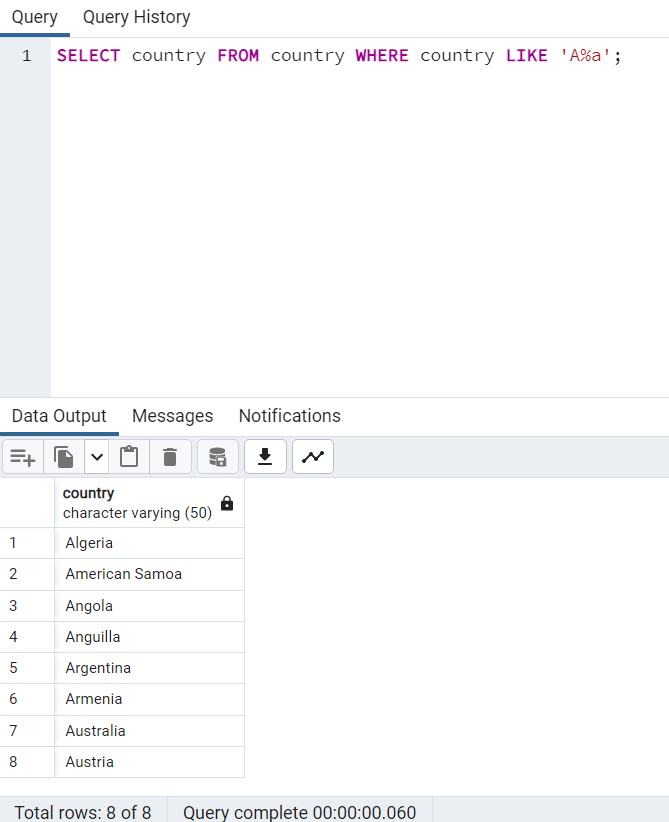
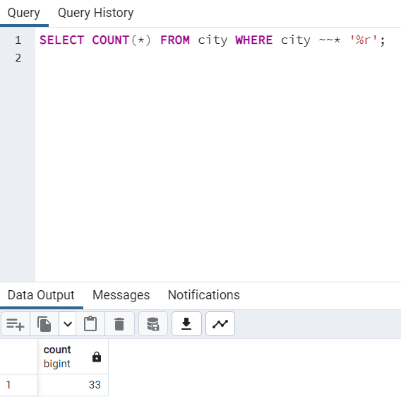

PATİKA SQL ÖDEVLER
-
- film tablosunda bulunan title ve description sütunlarındaki verileri sıralayınız.
- SELECT title, description FROM film;
- film tablosunda bulunan tüm sütunlardaki verileri film uzunluğu (length) 60 dan büyük VE 75 ten küçük olma koşullarıyla sıralayınız.
- SELECT * FROM film WHERE 60 < length AND length < 75;
- film tablosunda bulunan tüm sütunlardaki verileri rental_rate 0.99 VE replacement_cost 12.99 VEYA 28.99 olma koşullarıyla sıralayınız.
- SELECT * FROM film WHERE rental_rate = 0.99 AND replacement_cost = 12.99 OR replacement_cost = 28.99;
- customer tablosunda bulunan first_name sütunundaki değeri 'Mary' olan müşterinin last_name sütunundaki değeri nedir?
- SELECT first_name, last_name FROM customer WHERE first_name = 'Mary';

- film tablosundaki uzunluğu(length) 50 ten büyük OLMAYIP aynı zamanda rental_rate değeri 2.99 veya 4.99 OLMAYAN verileri sıralayınız.
- SELECT * FROM film WHERE NOT 50 < length AND rental_rate = 2.99 OR rental_rate = 4.99;
-
- film tablosunda bulunan tüm sütunlardaki verileri replacement cost değeri 12.99 dan büyük eşit ve 16.99 küçük olma koşuluyla sıralayınız ( BETWEEN - AND yapısını kullanınız.)
- SELECT * FROM film WHERE replacement_cost BETWEEN 12.99 AND 16.99;
- actor tablosunda bulunan first_name ve last_name sütunlardaki verileri first_name 'Penelope' veya 'Nick' veya 'Ed' değerleri olması koşuluyla sıralayınız. ( IN operatörünü kullanınız.)
- SELECT first_name,last_name FROM actor WHERE first_name IN('Penelope','Nick','Ed');
- film tablosunda bulunan tüm sütunlardaki verileri rental_rate 0.99, 2.99, 4.99 VE replacement_cost 12.99, 15.99, 28.99 olma koşullarıyla sıralayınız. ( IN operatörünü kullanınız.)
- SELECT * FROM film WHERE rental_rate IN (0.99,2.99,4.99) AND replacement_cost IN (12.99,15.99,28.99);

-
- country tablosunda bulunan country sütunundaki ülke isimlerinden 'A' karakteri ile başlayıp 'a' karakteri ile sonlananları sıralayınız.
- SELECT country FROM country WHERE country LIKE 'A%a';

- country tablosunda bulunan country sütunundaki ülke isimlerinden en az 6 karakterden oluşan ve sonu 'n' karakteri ile sonlananları sıralayınız.
- SELECT country FROM country WHERE country LIKE '_____n';
- film tablosunda bulunan title sütunundaki film isimlerinden en az 4 adet büyük ya da küçük harf farketmesizin 'T' karakteri içeren film isimlerini sıralayınız.
- SELECT title FROM film WHERE title ILIKE '%t%t%t%t%';
- film tablosunda bulunan tüm sütunlardaki verilerden title 'C' karakteri ile başlayan ve uzunluğu (length) 90 dan büyük olan ve rental_rate 2.99 olan verileri sıralayınız.
- SELECT * FROM film WHERE title LIKE 'C%' AND length > 90 AND rental_rate = 2.99;
-
- film tablosunda bulunan replacement_cost sütununda bulunan birbirinden farklı değerleri sıralayınız.
- SELECT DISTINCT replacement_cost FROM film;
- film tablosunda bulunan replacement_cost sütununda birbirinden farklı kaç tane veri vardır?
- SELECT COUNT(DISTINCT replacement_cost) FROM film;
- film tablosunda bulunan film isimlerinde (title) kaç tanesini T karakteri ile başlar ve aynı zamanda rating 'G' ye eşittir?
- SELECT COUNT(*) FROM film WHERE title LIKE 'T%' AND rating IN ('G');
- country tablosunda bulunan ülke isimlerinden (country) kaç tanesi 5 karakterden oluşmaktadır?
- SELECT COUNT(country) FROM country WHERE country ~~ '_____';
- city tablosundaki şehir isimlerinin kaç tanesi 'R' veya r karakteri ile biter?
- SELECT COUNT(*) FROM city WHERE city ~~* '%r';

-
- film tablosunda bulunan ve film ismi (title) 'n' karakteri ile biten en uzun (length) 5 filmi sıralayınız.
- SELECT * FROM film WHERE title LIKE '%n' ORDER BY length ASC LIMIT 5;
- film tablosunda bulunan ve film ismi (title) 'n' karakteri ile biten en kısa (length) ikinci(6,7,8,9,10) 5 filmi(6,7,8,9,10) sıralayınız.
- SELECT * FROM film WHERE title LIKE '%n' ORDER BY length OFFSET 5 LIMIT 5;
- customer tablosunda bulunan last_name sütununa göre azalan yapılan sıralamada store_id 1 olmak koşuluyla ilk 4 veriyi sıralayınız.
- SELECT * FROM customer WHERE store_id = 1 ORDER BY last_name DESC LIMIT 4;